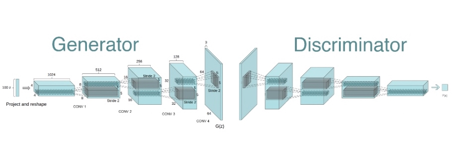

Deep Convolutional GAN on CIFAR-10
Unsupervised learning with CNNs, from the DCGAN recipe: an all-convolutional generator turns 100 numbers of noise into a 32×32 colour image, trained only by trying to fool a convolutional discriminator.
- Generative adversarial networks
- Neural Networks & Deep Learning course
- University of Tehran · 2020
- Keras · CIFAR-10

Inside the generator
From noise to an image, one layer at a time
InteractiveThe exact architecture from nndl_miniproj3_q2.py. Click a layer to see the tensor it produces.
The discriminator mirrors it: four 5×5 stride-2 convolutions (64 → 128 → 256 → 512 channels) with batch norm and LeakyReLU(0.2), then a single sigmoid unit. No pooling anywhere: strides do the resampling, as the DCGAN paper recommends.
Watching it train
Which loss should the generator minimise?
Generator losses vs. how fooled D is
InteractiveThe x-axis is D(G(z)), the discriminator's probability that a fake is real. Early in training D wins easily, so D(G(z)) sits near 0. Move the slider and compare the slopes: the slope is the learning signal the generator receives.
Minimax, log(1−D(G(z))), is the loss from the original GAN paper. It is almost flat exactly where the generator needs help, so learning stalls early. Non-saturating, −log D(G(z)), has the same fixed point but a steep slope near 0; it is the standard practical choice. Least squares, (D(G(z))−1)², penalises fakes by their distance to the "real" target and gives smoother gradients.
Wasserstein loss is not on this chart because its critic outputs an unbounded score, not a probability. Minimising the score gap approximates the earth-mover distance, which gives useful gradients even when real and fake distributions do not overlap.